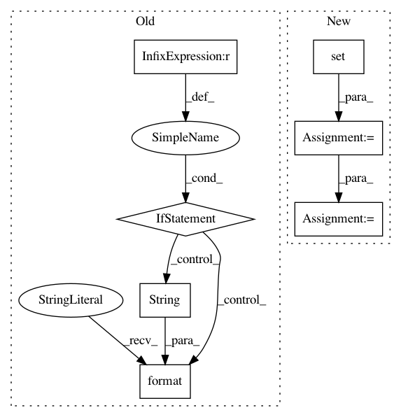

32f2649c5cda9acca3354e3246d798d8e0cec5dc,optuna/storages/_rdb/storage.py,RDBStorage,_get_trials,#RDBStorage#Any#Any#,929
Before Change
// Ensure that the study exists.
models.StudyModel.find_or_raise_by_id(study_id, session)
if len(excluded_trial_ids) >= self._get_trials_failed_excluded_trial_ids_len:
trial_models = self._get_trial_models_inclusive(study_id, excluded_trial_ids, session)
else:
try:
trial_models = (
session.query(models.TrialModel)
.filter(
~models.TrialModel.trial_id.in_(excluded_trial_ids),
models.TrialModel.study_id == study_id,
)
.all()
)
except OperationalError as e:
// Likely exceeding the number of maximum allowed variables. This number differ
// between database dialects. For SQLite for instance,
// see https://www.sqlite.org/limits.html and the section describing
// SQLITE_MAX_VARIABLE_NUMBER.
_logger.warning(
"Caught an error from sqlalchemy: {}. Falling back to a slower alternative. "
"".format(str(e))
)
// Bookkeeping to circumvent the same error in the next call.
self._get_trials_failed_excluded_trial_ids_len = len(excluded_trial_ids)
trial_models = self._get_trial_models_inclusive(
study_id, excluded_trial_ids, session
)
trials = [self._build_frozen_trial_from_trial_model(trial) for trial in trial_models]
self._commit(session)
After Change
.filter(models.TrialModel.study_id == study_id,)
.all()
)
trial_ids = set(trial_id_tuple[0] for trial_id_tuple in trial_ids)
trial_ids -= excluded_trial_ids
trial_models = (
session.query(models.TrialModel)
.filter(
models.TrialModel.trial_id.in_(trial_ids), models.TrialModel.study_id == study_id,
In pattern: SUPERPATTERN
Frequency: 3
Non-data size: 7
Instances
Project Name: pfnet/optuna
Commit Name: 32f2649c5cda9acca3354e3246d798d8e0cec5dc
Time: 2020-07-04
Author: hiroyuki.vincent.yamazaki@gmail.com
File Name: optuna/storages/_rdb/storage.py
Class Name: RDBStorage
Method Name: _get_trials
Project Name: pantsbuild/pants
Commit Name: 096b135b0b19f9425d97b1f77afb521f5b8584b5
Time: 2019-05-15
Author: 1305167+cosmicexplorer@users.noreply.github.com
File Name: src/python/pants/backend/python/subsystems/python_native_code.py
Class Name: PythonNativeCode
Method Name: check_build_for_current_platform_only
Project Name: stanford-mast/nn_dataflow
Commit Name: ef4353bd24b9d781c2dfa9cd2146d9b87e63b6f1
Time: 2017-05-01
Author: mgao12@stanford.edu
File Name: nn_dataflow/Scheduling.py
Class Name: Scheduling
Method Name: schedule_search